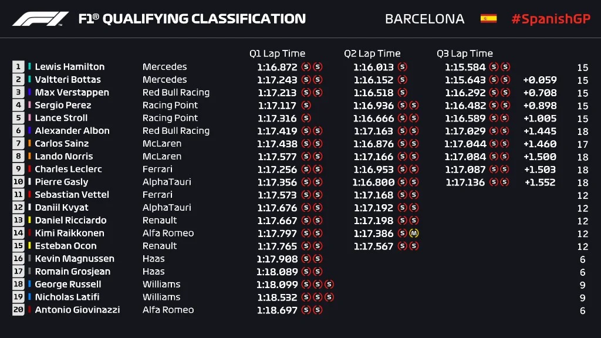
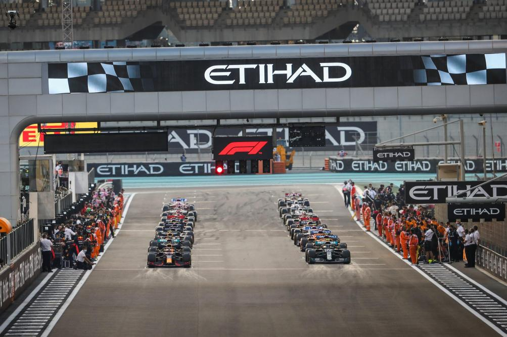
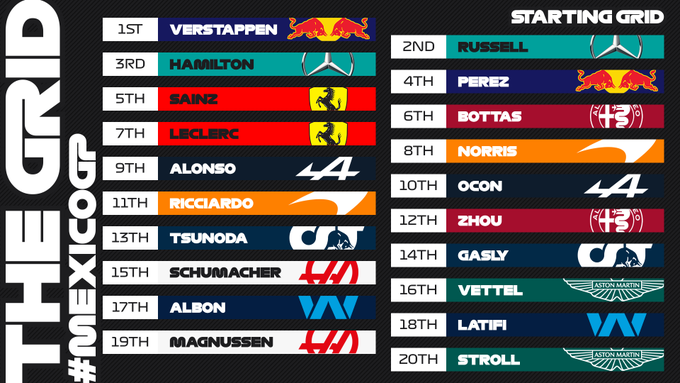
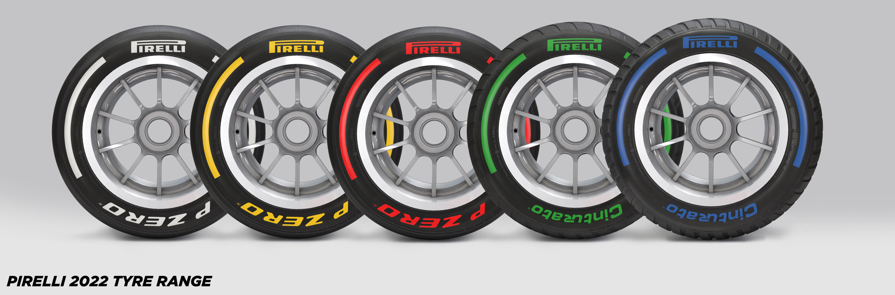
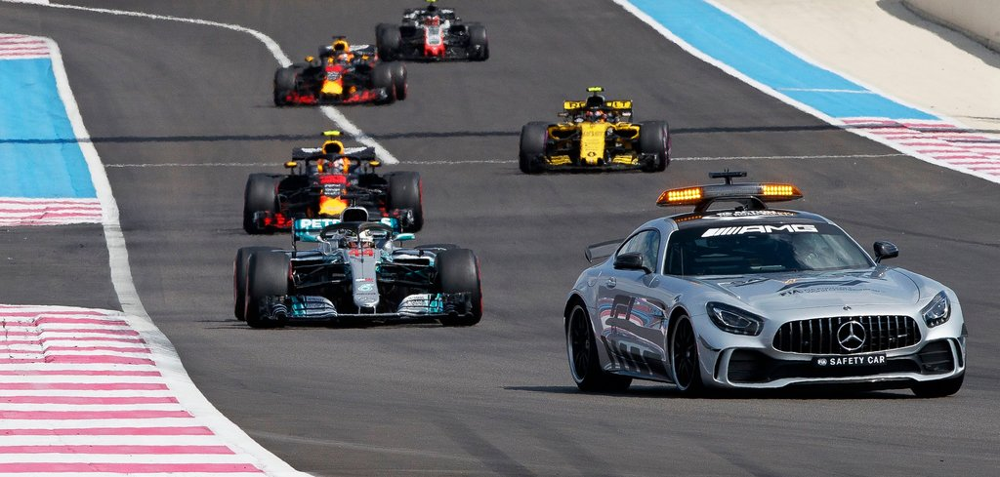
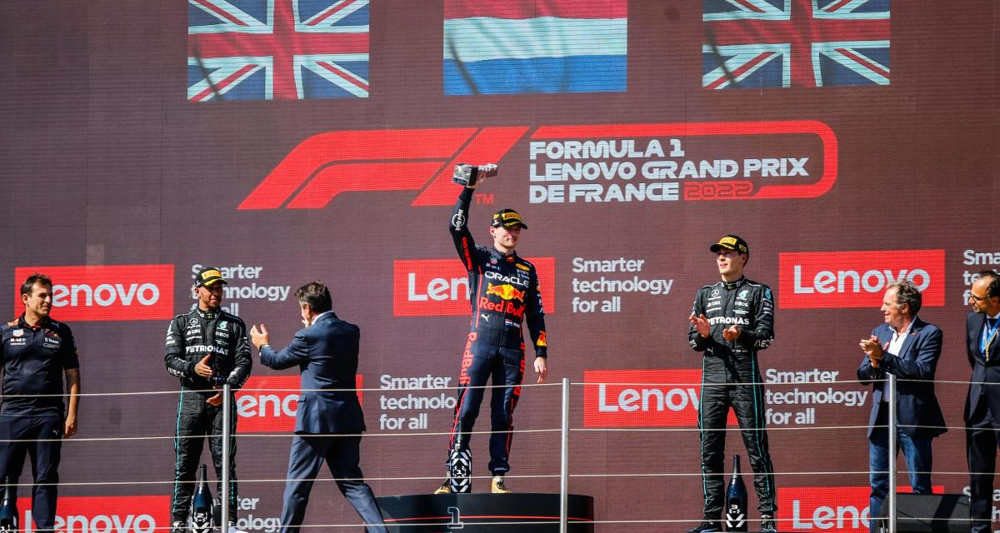

La Formule 1

La Formule 1 est un championnat qui réunis 20 pilotes de 10 écuries qui s’affrontent lors de 23 grands prix différents à travers le monde . En voici la liste.
Chacuns de ces grands prix durent 3 jours. Ils sont répartis en 3 sessions : Essais Libres, Qualifications, Course .
Comme montré ci-dessous lors du grand prix de bahreïn voici un weekend type de grand prix et ses horaires.


Les essais libres durent chacuns 1h et sont aux nombres de trois dont deux le vendredi et un le samedi, ils permettent aux écuries de faire les derniers règlages des monoplaces et d'éventuellement faire rouler les pilotes reservistes (1 par écuries) pour les entrainer(uniquement possible lors du premier essai libre .
Viennent ensuite les séances de Qualifications le samedi, phase déterminante pour la course du dimanche, en effet elles permettent de déterminer l'emplacement de chaque pilote au départ de la grille de la course du dimanche .
Son deroulement est assez simple, lors de la Q1 (séance qualifications 1) les 20 pilotes s'élancent sur la piste et essayent de faire le meilleur temps possible, ils commençent par faire un "tour de chauffe" pour chauffer les pneus, puis effectuent un "tour lancé" pour faire le tour le plus rapide possible. Ils disposent de 17 minutes pour faire autant de tours qu'ils veulent .
Le deroulement de la Q2 est semblable à celui de la Q1 sauf que les 5 derniers temps de la Q1 sont éliminés, ne reste donc plus que 15 pilotes en Q2 qui disposent alors de 15 minutes pour faire leurs tours.
Viens enfin la Q3 qui voit s'affronter les 10 meilleurs temps de la Q2 et qui détermine la grille finale en 12 minutes. Le meilleur de Q3 est appelé le pole man et part en premier dans la course du lendemain .


Le départ de la course se fait donc en fonction des Qualifications de la veille, les monoplaces viennent se ranger dans l'ordre établi, puis attendent le départ.
Comme on peut le voir à gauche, être premier au qualifications donne un avantage certain puisque la voie est libre pour accéllérer ce qui est plus difficile pour ceux derrières car ils ont des voitures devant eux .
Les monoplaces s'élancent à l'extinction des 4 feux rouges. Ces départs donnent souvent lieux à des accrochages ou des crashs puisque tous les pilotes veulent dépasser en même temps et que l'espace est très restreint .
Cependant la place sur la grille ne fait pas tout, cette saison nous l'a bien démontrer, Max verstappen n'a obtenu que 7 pole position contre 9 pour Charles Leclerc. Néanmoins Max Verstappen a décroché 15 victoires en grands prix contre seulement 3 pour Leclerc.

Lors d'un grand prix, les pneus se dégradent au fur et à mesure du temps, il faut donc que les pilotes s'arrêtent aux stands, le fameux "Pit Stop". Le règlement impose d'ailleurs au moins un arrêt au stand par pilote et un chagement de type de gomme minimum .
Mais alors, qu'est ce qu'une gomme ? Une gomme est un type de pneu, fournis par la marque pirelli, il existe 5 type de pneus différents, dans l'ordre de la photo suivante : Hard, Medium, Softs, Intermédiaires, Full Wet .
Les trois premiers sont appelés pneus "slicks", faits pour piste sèche . Les deux derniers sont des pneus "pluie", fait pour rouler sous la pluie ou sur piste mouillée.
Les trois premiers sont classés du plus lent au plus rapide et de celui qui se dègrade le moins vite au plus vite. Les pneus se dégradent en fonction d'un grand nombre de facteurs et doivent êtres utilisés intelligemment apr les écuries .
Les pneus pluies quand a eux sont différents, les inters sont pour piste légèrement mouillées, ils évacuent l'eau grâce à leurs raynures et empêchent les pilotes de glisser. Les full wet quand à eux sont faits pour les conditions très difficiles, ils sont beaucoup plus lents mais ont une tenu de route sous pluie beaucoup plus importante .

Lors d'un grand prix, il peut y avoir des accidents et des crashs, dans ces cas là, la plupart du temps les commissaires de courses brandissent des drapeaux jaunes sur le borde de la course, comme cela les pilotes doivent ralentir et peuvent voir qu'il y a un danger.
Si le danger ne peut être écarté sans intervention exterieur (La voiture qui a eu un accident est bloquée sur la piste), une "voiture de sécurité" est déployée. Ici devant les monoplaces, c'est une voiture de sport qui rentre sur la piste devant les formules 1 pour ralentir le rythme de la course .
Les monoplaces se placent ensuite les unes derrières les autres derrière la safety car et font des tours jusqu'à ce que le danger soit évacué, sous régime de safety car, les pilotes n'ont pas le droit de dépasser les autres et le temps des arrêts au stand sont réduits .
Quand la safety car rentre dans les stands et que le danger est écarté, c'est le leader de la course qui décide quand les pilotes doivent réaccélerer, tant qu'il n'a pas accélerer, personne n'a le droit de doubler .

A la fin du grand prix, les 3 premiers pilotes se voient remmettre un trophée et montent sur le podium, l'hymne du vainqueur retentit ensuite et ils finissent en s'aspergeant de champagne, avant de rentrer dans leurs écuries pour préparer le prochain grand prix .
On peut voir sur cette photo le pilote Redbull Max Verstappen, vainqueur du grand prix de France, suivi par les pilotes Mercedes Lewis Hamilton 2e et George Russell 3e .